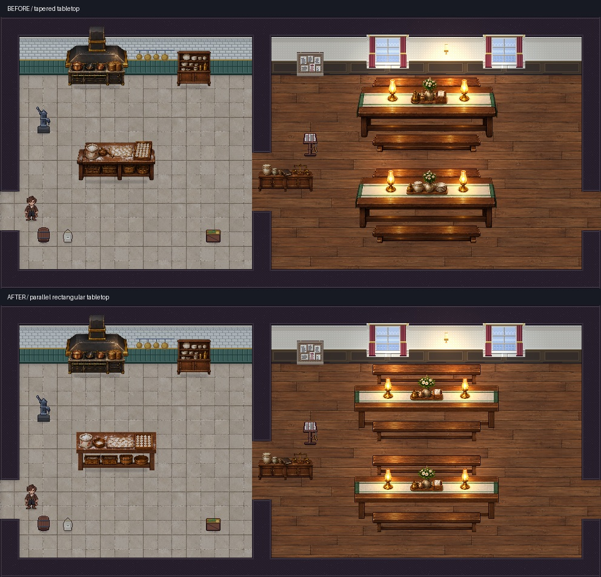

目标：按当前要求采用平行矩形桌面、正面围板、竖直桌腿，不出现侧向收缩或侧面透视。材质沿用食堂概念图的深木、桌旗、灯具与厨房用品。

取景：Godot 4.6.1加载正式logistics场景，全图992×448；上下为同范围。下图为本轮资源重新导入后的渲染。它不是Host玩家镜头或剧情会话。
本轮更换餐桌、长凳、备餐台透明原稿，明确裁切、脚点与世界宽度；两个餐桌共用同一修正设计。代码暖色光照随桌灯位置调整。
仍存差异：炉灶、烟罩、碗柜和配餐柜未重绘；墙窗、厨房收纳和角色笔触仍与概念图不同。未宣称整间房已完整匹配概念图。
验证：地图渲染与独立碰撞夹具退出码均为0；食堂四个站点均实际到达。未执行DV会话或章节通关。
当前原始截图 · 源图裁切清单